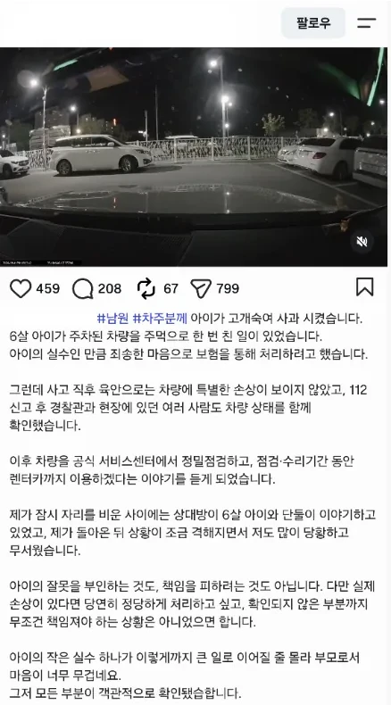
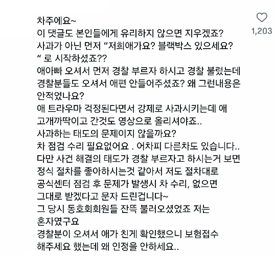

둘다흠
애 부모는 당연히 폐급인데 차주도 좀 답답하네
저렇게 차에 기스도 안날거로 렌트부르고 뭐하고 하면 자기 쌩돈 나갈 가능성만 높아지는거 아닌가?
차라리 애 교육 ㅈ같이 시킨다고 쌍욕 한번하고 말지
이미 감정의 영역으로 들어갔고 감정싸움은 비용보다 감정이 우선함
근데 기분만 상하고 끝날거를
기분도 상하고 돈도 상하고 자존심도 상하게 되자너..
그렇게 대부분의 사람들이 똥을 피하니까 똥들이 나대는거임
쌍욕을 한 순간 난 ‘애가 한 실수를 쌍욕부터 한 저급한 어른’이 되는 거고
얘기를 들은 대부분의 사람은 쌍욕을 한 피해자를 좋지 않게 생각함, 당연한 거임
그리고 경찰부터 부르자고 해서 부른 애 부모가 경우있게 행동했다고는 보기 힘듬. 애초에 경찰도 피해자 쪽 편들어줬다잖아
대놓고 진상떠는 사람 조지는데 내 돈 조금 쓰는 건
전혀 아깝지 않음
조지면 ㅇㅋ인데 못 조지고 본인만 조져지는거 아님..?
애초에 사진상에서 하트수 보셈, 실직적으로 조지는 건 당연히 어려운 사안이지만
피해자는 보험처리 절차대로 할 뿐이고, 가해자 애 부모는 괜히 글 올렸다가 욕먹고 있잖아
애초에 난이도를 생각해봐. 네가 난데없이 처맞은, 모욕감을 느낀 상황에서 그냥 참고 피한다? 그건 질질짜는 어린애도 할 수 있는 거임. 너만 참으면 끝나니까
참지 않고, 상대방도 ㅈ같게 해주는 게 어려운 선택인 거고
차주가 이길 수 있는 싸움은 아니네;;;
자차하고 구상권 청구해야될텐데
보험사에서 청구를 안할듯함
애는 그럴수있지 근데 부모가 그러면 안되지 ㅋㅋ
아이는 그럴수잇지. 근데 부모는 그러면 안되지.
조지면 끝까지 조진다 요즘 시기를 잘 살아나갈 필수 덕목중 하나 아니니??
사과만 제대로 했어도
아니 그럴수없어 우리는 개붕이를 사랑한다